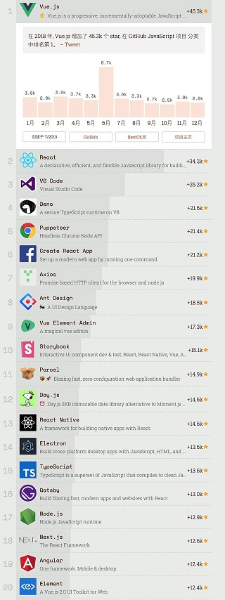
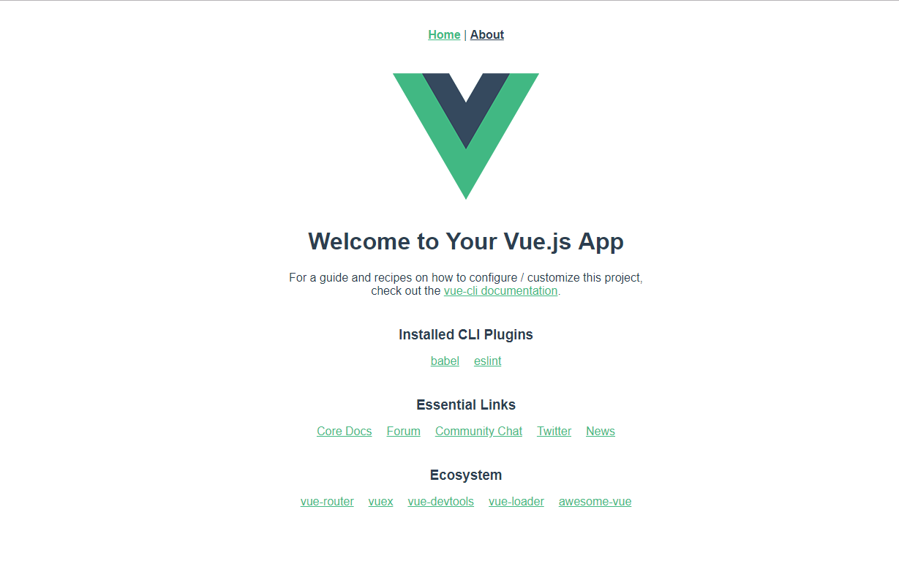
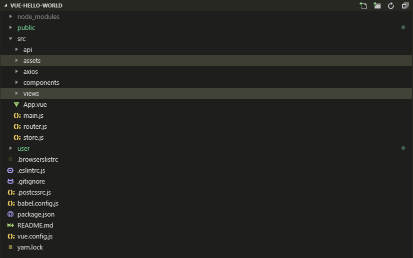
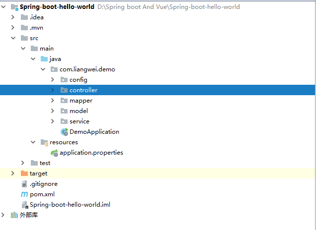
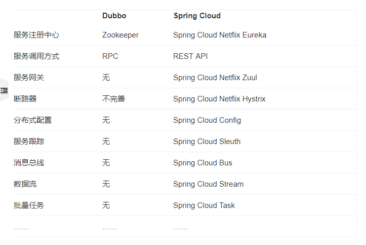
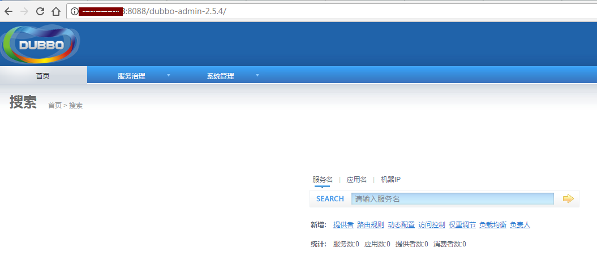

Spring-Boot-And-Vue
记一次Spring Boot 和Vue的前后端分离培训
环境：
MySql: 14.14
Node.js V10.15.0
Vue.js V2.5.21
yar: V1.13.0
jdk: 1.8
Win10企业版
IDE:VScode & IDEA
前后端分离
实现真正的前后端解耦。
核心思想是前端html页面通过ajax调用后端的restuful api接口并使用json数据进行交互。
前后端分离会为以后的大型分布式架构、弹性计算架构、微服务架构、多端化服务（多种客户端，例如：浏览器，安卓，IOS等等）打下坚实的基础。
Vue.js
Vue介绍
Vue是一套用于构建用户界面的渐进式框架，网址：https://cn.vuejs.org/
Vue在Github的欢迎度

不需要操作Dom，实现了MVVM
1
2
3
4
5// jquery的操作
$("#test3").val("Dolly Duck");
// Vue的操作
MVVM，实现了双向绑定学习成本低，文档浅显易懂
Vue 建项目
Vue 提供了一个官方的 CLI，为单页面应用 (SPA) 快速搭建繁杂的脚手架。基于Vue cli项目脚手架，网址：https://cli.vuejs.org/zh/guide/
运行以下命令其一来创建一个新项目，有默认选默认即可
1
2
3vue create vue-hello-world (命令行)
vue ui (界面)在创建好项目以后，运行以下命令将能看到初次项目创建的界面
1
2
3cd vue-hello-world
yarn serve默认情况下，在 浏览器访问 http://localhost:8080/ 将能看到如下界面：

Vue 相关结构和生命周期介绍
- 目录结构如下图：

单个.vue文件的组成部介绍
1
2
3
4
5
6
7
8
9
10
11<template>
<!--html-->
</template>
<script>
//js
</script>
<style>
/* css style */
</style>组件化应用构建
使用小型、独立和通常可复用的组件构建大型应用,一个页面如搭积木一样

Vue的生命周期如下图：

钩子方法: 模板方法的执行结果，该方法就叫做钩子方法，个人理解：影响了模板的执行，把函数勾住了，这个方法就是钩子函数。
| 钩子函数 | 解释 |
|---|---|
| beforeCreate | 实例初始化自动调用 |
| created | 实例创建后调用 |
| beforeMounte | 在mount之前运行,元素已经加载，但是属性值没渲染 |
| mounted | 并挂载到实例上去之后调用该钩子 |
| beforeDestroy | 在开始销毁实例时调用 |
| destroyed | 在实例销毁后调用 |
Vue 常用指令
声明式渲染
1
2
3<div id="app">
{{ message }}
</div>1
2
3data: {
message: 'Hello Vue!'
}条件渲染
1
2
3<div id="app-3">
<p v-if="seen">现在你看到我了</p>
</div>1
2
3data: {
seen: true
}循环渲染
1
2
3
4
5
6
7<div id="app-4">
<ol>
<li v-for="todo in todos">
{{ todo.text }}
</li>
</ol>
</div>1
2
3
4
5
6
7data: {
todos: [
{ text: '学习 JavaScript' },
{ text: '学习 Vue' },
{ text: '整个牛项目' }
]
}监听事件
可以用 v-on 指令监听 DOM 事件，并在触发时运行一些 JavaScript 代码。
1
2
3
4<div id="example-2">
<!-- `greet` 是在下面定义的方法名 -->
<button v-on:click="greet">Greet</button>
</div>1
2
3
4
5
6methods: {
greet: function () {
// `this` 在方法里指向当前 Vue 实例
alert('Hello ' + this.name + '!')
}
}计算属性缓存 vs 方法
1
2
3
4<div id="example">
<p>Original message: "{{ message }}"</p>
<p>Computed reversed message: "{{ reversedMessage }}"</p>
</div>1
2
3
4
5
6
7
8
9
10
11
12
13
14
15
16
17
18
19var vm = new Vue({
el: '#example',
data: {
message: 'Hello'
},
computed: {
// 计算属性的 getter
reversedMessage: function () {
// `this` 指向 vm 实例
return this.message.split('').reverse().join('')
}
},
methods: {
// 方法
reversedMessage: function () {
return this.message.split('').reverse().join('')
}
}
})数据变化，watch
1
2
3
4
5
6
7
8
9
10
11
12
13var vm = new Vue({
el: '#demo',
data: {
firstName: 'Foo',
lastName: 'Bar'
},
computed: {
// 当两个值变化时，将会触发此函数
fullName: function () {
return this.firstName + ' ' + this.lastName
}
}
})表单输入绑定
1
2<input v-model="message" placeholder="edit me">
<p>Message is: {{ message }}</p>缩写
v-bind 缩写
1
2
3
4
5<!-- 完整语法 -->
<a v-bind:href="url">...</a>
<!-- 缩写 -->
<a :href="url">...</a>v-on 缩写
1
2
3
4
5<!-- 完整语法 -->
<a v-on:click="doSomething">...</a>
<!-- 缩写 -->
<a @click="doSomething">...</a>
路由
1 | const router = new VueRouter({ |
1 | <!--html跳转--> |
1 | // js跳转 |
使用 axios 访问 API
1 | // get请求 |
1 | // post 请求 |
在学习完以上知识以后，将能使用Vue做出简单的页面运用
扩展：TypeScript、Vue组件间传值、Mock、Vuex、调试、JavaScript的同步异步,作用域、ES6、部署、虚拟DOM、Http的get和post等。
梭哈 UI:iview、小程序：mpvue，移动端：muse-ui，桌面端：Electron + Vue 前端啥都能做。
Spring Boot
介绍
Spring Boot 是所有基于 Spring 开发的项目的。Spring Boot 的设计是为了让你尽可能快的跑起来 Spring 应用程序并且尽可能减少你的配置文件。
使用Spring Boot开发单个RESTful服务
由于网上资源众多，就不详细编写创建步骤了。这里找了一个网上的教程，大家可以按这个步骤去创建一个项目，能用浏览器能访问就行。SpringBoot新建HelloWorld工程： https://blog.csdn.net/small_mouse0/article/details/77800737
项目目录结构

概念
spring ioc容器:，主要用来管理对象和依赖，以及依赖的注入
依赖注入:不用new，让Spring控制new过程
控制反转:不是用new方式实例化对象,实质的控制权已经交由程序管理
Bean
bean是一个对象，由ioc容器生成的对象就是一个bean
对比Spring
1 | package com.yiibai.common; |
注解
@SpringBootApplication
@SpringBootApplication = @Configuration + @EnableAutoConfiguration + @ComponentScan 简化程序的配置。
@Configuration
注解在类上，表示这是一个IOC容器，相当于spring的配置文件，IOC容器的配置类。
@ComponentScan
如果扫描到有@Component @Controller @Service等这些注解的类，则把这些类注册为bean。@Controller, @Service, @Repository是@Component的细化，这三个注解比@Component带有更多的语义，它们分别对应了控制层、服务层、持久层的类。
@RestController
告诉Spring以JSON字符串的形式渲染结果，并直接返回给调用者。
@RequestMapping
告诉Spring这是一个用来处理请求地址映射的注解。
@Autowired
可以对类成员变量、方法及构造函数进行标注。从IoC容器中去查找，并自动装配。（去除@Autowired可以运行一下试试）
Mybatis的@Mapper
注解的接口生成一个实现类
跨域
浏览器从一个域名的网页去请求另一个域名的资源时，域名、端口、协议任一不同，都是跨域。
跨域资源共享(CORS) 是一种机制，它使用额外的 HTTP 头来告诉浏览器 让运行的Web应用被准许访问来自不同源服务器上的指定的资源。
RESTful风格
Rest是web服务的一种架构风格，一种设计风格，URL只指定资源，以HTTP方法动词进行不同的操作。
1 | GET http://localhost:8080/api/users （查询用户） |
Restful好处:
- URL具有很强可读性的，具有自描述性
- 规范化请求过程和返回结果
- 资源描述与视图的松耦合
- 可提供OpenAPI，便于第三方系统集成，提高互操作性
- 提供无状态的服务接口，降低复杂度，可提高应用的水平扩展性
Spring Boot和 Spring Cloud的关系
基于Spring Boot 快速开发单个微服务，Spring Cloud是一个基于Spring Boot实现的开发工具；Spring Boot专注于快速、方便集成的单个微服务个体，Spring Cloud关注全局的服务治理框架；Spring Boot可以离开Spring Cloud独立使用开发项目，但是Spring Cloud离不开Spring Boot，属于依赖的关系。
扩展
统一异常处理、RabbitMQ、JWT、Redis、定时任务、@Async异步、log4j记录日志、Spring Security进行安全控制、WebSocket
Spring Cloud 介绍

